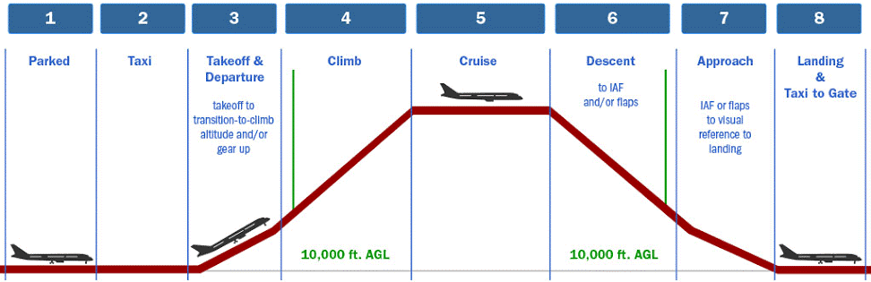

📅 Tarefas do Projeto AIRDATA
S-02
Solicitamos que os pesquisadores do projeto realizem as seguintes atividades até a próxima reunião, agendada para o dia 29/04/2025:
-
📝 Equipe: Análise da proposta de arquitetura computacional do projeto AirData: realizar a leitura crítica da estrutura conceitual apresentada e elaborar uma matriz SWOT (Forças, Fraquezas, Oportunidades e Ameaças), além de formular perguntas que possam contribuir para o esclarecimento e aprimoramento da proposta.
-
📝 Equipe: Revisão da proposta de questionário para stakeholders: realizar a leitura do instrumento proposto, também elaborando uma matriz SWOT e preparando questões que ajudem a refinar o conteúdo e a abordagem junto aos stakeholders.
-
📝 João Vitor e João Basílio: Pensar em como realziar a caracterização completa de um voo comercial. Para tanto, esse processo requer uma abordagem multidimensional que integre dados temporais, operacionais, meteorológicos e de desempenho. Para cada fase do voo, serão necessário um conjunto específico de bancos de dados, por exemplo: 1) Fase de Estacionamento/Taxi: banco de dados de operações terrestres e registro de portas de embarque; 2) Decolagem/Subida: banco de dados de desempenho na decolagem e registros meteorológicos locais; 3) Subida até Cruzeiro: banco de dados de parâmetros de motor e performance; 4) Cruzeiro: banco de dados meteorológicos em altitude e consumo de combustível; 5) Descida: banco de dados de planejamento de aproximação e condições meteorológicas de destino; 6) Aproximação/Pouso: banco de dados de eventos de aproximação e registros de tráfego aéreo; 7) Taxi até Gate: banco de dados de operações terrestres do aeroporto de destino. O desafio está em transformar esse grande volume de dados heterogêneos em uma representação fluida, discreta e coerente, que permita visualizar a "história completa" do voo, desde o planejamento pré-decolagem até a análise pós-aterrissagem, possibilitando insights tanto para otimização operacional quanto para análises de pontualidade e regularidade, sem perder a granularidade necessária nos momentos críticos como decolagem, transições de altitude e aproximação final.

O foco deste trabalho é claro: diagnosticar o voo em todas as suas fases.
S-01
Solicitamos que os pesquisadores dos projetos realizem as seguintes tarefas até a próxima reunião no dia 22/04/2024:
- Arquitetura Computacional (Jean e Prof. Flávio)
- Modelos de LLMs e Recursos (Prof. Dimas e Vitor)
- Questionários para Stakeholders (Prof. Guterres e Guilherme)
- Apresentação Didática sobre Voos (João Vitor e João Basílio)
📝 Prof. Flávio e Jean
Desafio: Proposição da Arquitetura Computacional do AIRDATA
Considerando os objetivos do projeto AIRDATA — como a integração de dados heterogêneos (e.g., METAR, ADS-B, ANAC), a produção automatizada de indicadores (GANP, GASP, PAN) e a aplicação de técnicas de inteligência artificial para análises preditivas e prescritivas — qual seria, na sua visão, a arquitetura computacional mais adequada para garantir:
- Escalabilidade
- Interoperabilidade entre sistemas
- Eficiência na análise de grandes volumes de dados aeronáuticos
Em sua proposta, considerar:
| Aspecto | Detalhamento |
|---|---|
| Armazenamento | A escolha dos tipos de banco de dados e tecnologias de armazenamento |
| Estrutura | O uso (ou não) de um data lake centralizado versus abordagens federadas |
| Processamento | Ferramentas recomendadas para processamento analítico e modelagem com IA (ex: JupyterHub, RStudio, Spark) |
| Interface | A forma como usuários finais (ANAC, DECEA, CNJ) acessariam os resultados ou fariam consultas complexas |
Dica: Sinta-se à vontade para ilustrar com diagramas, citar ferramentas específicas ou propor abordagens híbridas.
📝 Prof. Dimas e Vitor
Desafio: Seleção de Modelos de LLMs e Recursos Computacionais
Quais modelos de linguagem (LLMs) e redes neurais, disponíveis de forma gratuita ou open source, você considera mais adequados para atender às necessidades do AIRDATA, levando em conta:
- Capacidade de compreensão contextual e resposta a consultas técnicas (dados aeronáuticos)
- Facilidade de integração com a plataforma AIRDATA (acesso a bancos, documentos, visualizações)
- Requisitos computacionais realistas para rodar os modelos localmente ou na nuvem
- Possibilidade de customização (fine-tuning) com dados próprios do projeto
- Compatibilidade com frameworks como LangChain, Haystack ou pipelines baseadas em RAG
Além disso, estimar:
# Exemplo de especificação de hardware
{
"modelo": "LLaMA 3 8B",
"hardware_mínimo": {
"RAM": "16GB",
"GPU": "NVIDIA RTX 3070 (8GB VRAM)",
"Storage": "SSD 256GB"
},
"tempo_inferência": "~500ms por consulta",
"fase_recomendada": "Prototipação"
}
- O tipo de hardware mínimo necessário (ex: GPU local, instância cloud) para execução eficiente
- Quais modelos podem ser utilizados já na fase de prototipação, e quais exigiriam mais recursos para uso em produção
- Vantagens de abordagens híbridas (ex: modelo leve local + chamadas externas via API)
📝 Prof. Guterres e Guilherme
Desafio: Elaboração de Questionários Estruturados para Stakeholders
Um dos passos metodológicos fundamentais do projeto AIRDATA é a escuta qualificada dos stakeholders — ANAC, DECEA, SAC, CNJ e demais usuários estratégicos. Para isso, queremos elaborar questionários estruturados que nos permitam:
- Identificar as funcionalidades esperadas do sistema e do chatbot por diferentes perfis de usuário
- Levantar as principais bases de dados que os stakeholders consideram essenciais para análise do transporte aéreo
- Compreender como o Poder Judiciário (via CNJ) poderia se beneficiar de uma ferramenta voltada à judicialização do transporte aéreo
Esperamos que a proposta tenha:
| Requisito | Prioridade |
|---|---|
| Múltiplos perfis de usuários | Alta |
| Tipos de perguntas adequados | Alta |
| Usabilidade do chatbot | Média |
| Blocos temáticos | Opcional |
- Considere múltiplos perfis de usuários (órgãos reguladores, operadores do setor aéreo, analistas do CNJ)
- Traga sugestões de tipos de perguntas adequados (abertas, múltipla escolha, escalas de prioridade ou frequência)
- Inclua perguntas voltadas à usabilidade esperada do chatbot, indicadores e formas de acesso à plataforma
- (Opcional) Apresente uma lógica de blocos ou seções temáticas do questionário
Importante: Essa contribuição será essencial para garantir que as funcionalidades e a arquitetura do AIRDATA estejam alinhadas com as necessidades práticas e operacionais dos usuários.
✈️ João Vitor e João Basílio
Desafio: Apresentação Didática — Como funciona um voo completo e os conceitos-chave do espaço aéreo
Solicitamos que os pesquisadores João Vitor e João Basílio preparem uma apresentação para a equipe explicando o fluxo completo de um voo comercial, desde a preparação até o pouso no aeroporto de destino, abordando os seguintes pontos:
Parte 1 – Conceitos e Etapas de um Voo Comercial (João Vitor)
Explicação das etapas de um voo:
- Planejamento e envio do plano de voo (FPL)
- Pushback, taxiamento, decolagem
- Navegação em cruzeiro
- Aproximação, pouso e taxiamento final
Principais conceitos da navegação aérea:
- O que é uma aerovia
- O que são waypoints, STARs e SIDs
- O que são níveis de voo (FLs) e separação vertical/lateral
Exemplos reais de dados utilizados no monitoramento de um voo:
- Plano de voo (origem, destino, rota, alternativo, ETD/ETA)
- Dados operacionais (ICAO codes, callsign, tipo de aeronave)
- Condições meteorológicas (METAR, TAF)
- Dados da ANAC/DECEA relevantes ao voo